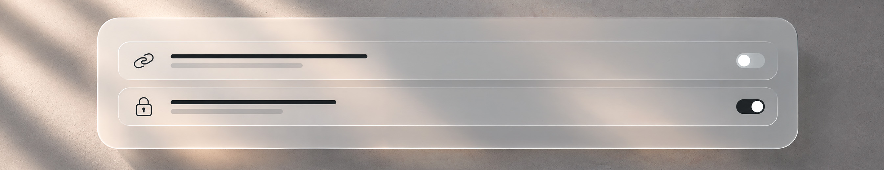

01 · Comportement
Personnalité
Comment la personne travaille, coopère et réagit sous pression.
Noike accompagne les recruteurs dans l’évaluation des candidats à travers trois dimensions complémentaires : personnalité, motivations et raisonnement. Une approche structurée pour éclairer chaque décision.
Free : le profil complet · 5 candidats à vie · sans carte bancaire.
01 · Comportement
Comment la personne travaille, coopère et réagit sous pression.
02 · Moteurs
Ce qui l’engage durablement, et ce qui l’éteint.
03 · Raisonnement
Comment elle résout un problème nouveau, verbal comme logique.
Instruments et sources détaillés sur la page Méthode
Pas de test maison, pas de boîte noire. Nos instruments sont documentés : on sait d’où viennent les questions et comment les résultats sont construits. Et chaque profil dit aussi ce qu’il ne mesure pas.
Noike ne tranche pas à votre place. Il transforme le profil en questions concrètes à poser, et vous laisse juger la personne en face de vous.
Évaluez un candidatPortrait candidat
Profil relationnel ancré dans la stabilité.
Acquis
À explorer
Écarts critiques
Questions concrètes à poser
Trois angles pour comprendre une personne, trois lectures, jamais de score.
Avant d’évaluer un seul candidat, Noike vous aide à écrire ce que le poste demande vraiment, avec le manager et l’équipe, sans compte à créer pour eux.
À plusieurs recruteurs, voyez l'avis de chacun et échangez en commentaires sur sa fiche.
Deux synthèses prêtes à partager, que vous n’avez pas à rédiger : une par candidat, une par campagne. Vous ajustez, vous validez.
Un lien à envoyer à votre client - aucun compte, rien à installer.

Le lien est révocable en un clic, et vous savez quand il a été consulté. Rien n’est partagé sans votre accord.

| Critère | TestGorilla | Noike |
|---|---|---|
| En une phrase | Trie un volume avec des tests | Établit le profil complet d'une personne. |
| Logique | Bibliothèque : vous composez | Profil : un seul passage, trois dimensions |
| Tests techniques métier (code, logiciels) | Oui, 350+ | Non |
| Instruments publics et auditables | Non communiqué | Oui, nommés |
| Scoring | « Auto-scored using AI » | Restitution en langage naturel, lue par vous |
| Restitution candidat | Non systématique | Systématique |
| Prix | À partir de ~1 700 $/an (plan Core) | Affiché, voir les tarifs |
| Idéal pour | Trier des centaines de candidatures avec des tests techniques | Recruter peu, mais décider bien : un profil complet, lisible, vérifiable |
une bibliothèque de « 350+ tests » (cognitifs, techniques, langues, personnalité, culture), un screening automatisé avec scoring par IA, des questions éliminatoires avant l'évaluation, un modèle tarifaire à l'usage (offre gratuite limitée, plan Core à partir de ~1 700 $/an).
| Critère | AssessFirst | Noike |
|---|---|---|
| En une phrase | Vend une prédiction | Vend une description exacte, et revendique de ne pas prédire. |
| Promesse | Prédire le succès et la compatibilité | Décrire : personnalité, motivations, raisonnement |
| Modèle | Propriétaire, IA prédictive | Instruments publics de science ouverte, nommés |
| Vérifiable par un tiers ? | Non communiqué | Oui |
| Qui décide ? | Modèles de décision basés sur l'IA | Vous, l'outil prépare, il ne décide pas |
| Limites dites dans le rapport | Non communiqué | Oui |
| Prix | Sur devis | Affiché, voir les tarifs |
| Idéal pour | Recruter en volume sur des postes homogènes, avec un modèle prédictif sur vos données | Savoir qui est la personne, et décider vous-même |
une « plateforme d'intelligence prédictive » qui « prédit le succès, l'engagement et la compatibilité des talents », des « modèles prédictifs personnalisés », « −50 % d'erreurs de recrutement, −45 % de temps de recrutement ».
| Critère | Maki | Noike |
|---|---|---|
| En une phrase | Automatise tout le recrutement | N'automatise rien, il prépare votre entretien. |
| Périmètre | Le processus entier (« end to end ») | Un moment : connaître la personne avant l'entretien |
| Agents IA autonomes | Oui, six agents | Non |
| Volume cible | Grands comptes, gros volumes | PME, cabinets, recruteurs indépendants |
| Instruments publics | Non communiqué | Oui, nommés |
| Restitution candidat | Non communiqué | Systématique |
| Prix | Sur devis | Affiché, voir les tarifs |
| Idéal pour | Orchestrer tout le tunnel de recrutement de milliers de candidatures | Discerner : savoir qui est vraiment la personne en face de vous |
« the intelligence running your hiring, end to end », des agents IA qui « screènent, interviewent, planifient », un screening sur « 300+ skills », du voice screening « 24/7 en 45+ langues », des références grands comptes (H&M, PwC, Deloitte, IKEA). Maki précise que la décision finale reste humaine.
| Critère | Yuzu | Noike |
|---|---|---|
| En une phrase | Observe des comportements en jeu | Mesure avec les instruments de la recherche. |
| Méthode | Mises en situation vidéoludiques | Questionnaires standardisés de science ouverte |
| Instruments publics et auditables | Non, algorithmes propriétaires | Oui : IPIP-NEO-120, O*NET WIP, épreuves de raisonnement (science ouverte) |
| Comparabilité inter-candidats | Propre à la plateforme | Standards internationaux documentés |
| Expérience candidat | L'immersion | La restitution : le candidat repart avec son profil |
| Raisonnement mesuré | Via jeux | Épreuves de raisonnement issues de la science ouverte |
| Prix | Sur devis | Affiché, voir les tarifs |
| Idéal pour | Une expérience candidat immersive, des soft skills en mise en situation | Vérifier la mesure et la partager telle quelle avec candidat et client |
un « assessment center nouvelle génération » gamifié, « immersion et neurosciences », une technologie « plus prédictive que les questionnaires traditionnels (de 40 à 60 %) », une expérience candidat « unique et mémorable », la réduction du biais de désirabilité sociale.
| Critère | PerformanSe | Noike |
|---|---|---|
| En une phrase | Un modèle propriétaire | Des instruments publics que tout psychologue peut examiner. |
| Ancienneté | 35 ans | Instruments issus de décennies de recherche publique (tradition Goldberg, O*NET) |
| Base théorique | Big Five + théorie des besoins, IRT | Big Five (IPIP-NEO-120), motivations (O*NET WIP), raisonnement (épreuves de science ouverte) |
| Modèle | Propriétaire | Science ouverte, auditables |
| Promesse | « Les plus prédictives du marché » | Aucune promesse de prédiction, revendiqué |
| Accompagnement conseil | Oui, historique | Autonomie : lisible sans expertise psychométrique |
| Prix | Sur devis | Affiché, voir les tarifs |
| Idéal pour | Un accompagnement conseil de long terme avec un éditeur historique | Des instruments qu'on ne vous demande pas de croire sur parole |
« 35 ans d'expertise », un modèle Big Five combiné à la théorie des besoins, l'IRT, le test TwoB-R (cognitif + comportemental), des données « anonymisées et hébergées en France » alimentant « les évaluations les plus prédictives du marché ».
| Critère | Central Test | Noike |
|---|---|---|
| En une phrase | Propose un catalogue où choisir | Un profil unique, rien à choisir. |
| Logique | Catalogue de tests spécialisés | Un profil complet, un seul passage |
| Expertise requise pour choisir et lire | Recommandée | Aucune : conçu pour être lisible sans psychométricien |
| Usages | Recrutement, carrière, orientation | Le recrutement : préparer le meilleur entretien |
| Instruments publics | Non, tests édités en propre | Oui, nommés |
| Restitution candidat | Selon les tests | Systématique |
| Prix | Sur devis | Affiché, voir les tarifs |
| Idéal pour | Des besoins d'évaluation variés et une fonction RH pour piloter le catalogue | Une seule réponse complète : qui est la personne en face de vous ? |
un éditeur international, « plus de 3 000 entreprises » accompagnées, une gamme étendue (personnalité, motivations, aptitudes, orientation, gestion émotionnelle), une plateforme « 100 % en ligne » alliant « performance, sécurité et simplicité ».
| Critère | Thomas (PPA/DISC) | Noike |
|---|---|---|
| En une phrase | Décrit un style en 8 minutes | Établit en 25 à 30 minutes un profil complet. |
| Modèle | DISC (4 types comportementaux) | Big Five (30 facettes), motivations, raisonnement |
| Durée | 8 minutes | 25 à 30 minutes |
| Ce qui est couvert | Le comportement au travail | Personnalité + motivations + raisonnement |
| Instruments publics | Non, propriétaire (certifié BPS) | Oui, nommés et auditables |
| Restitution candidat | Selon dispositif | Systématique |
| Prix | Sur devis | Affiché, voir les tarifs |
| Idéal pour | Un profil comportemental très rapide, dans un langage DISC déjà installé | Une demi-heure honnête pour une décision qui engage des années |
le PPA, analyse comportementale fondée sur le modèle DISC (1928), « 8 minutes » de passation, une certification par la British Psychological Society, plus de 60 ans d'usage, « recruter avec plus de certitude » et réduire le turnover.
| Critère | Hogan | Noike |
|---|---|---|
| En une phrase | L'évaluation experte des dirigeants | Le profil lisible par tous. |
| Cible | Leadership, executive assessment | PME, cabinets, recruteurs indépendants |
| Lecture des résultats | Certification utilisateur requise | Aucune : restitutions en langage naturel |
| Modèle | Propriétaire (HPI, HDS, MVPI) | Science ouverte : IPIP-NEO-120, O*NET WIP, épreuves de raisonnement |
| Promesse | « Highest predictive validity in the industry » | Aucune promesse de prédiction, revendiqué |
| Restitution candidat | Via débrief expert | Systématique, directe |
| Prix | Sur devis, via distributeurs | Affiché, voir les tarifs |
| Idéal pour | Évaluer des dirigeants avec un accompagnement expert certifié | Un profil lisible par qui décide et par qui est décrit, sans intermédiaire |
trois décennies de recherche, la mesure du « bright side, dark side, inside » de la personnalité, « the highest level of predictive validity in the industry », « 75 % des Fortune 500 », un usage centré leadership et cadres dirigeants, avec certification des utilisateurs.
Si votre besoin est l'un de ces quatre-là, l'un des acteurs ci-dessus le servira mieux que nous, c'est écrit sur chacune de leurs pages.
Toutes les affirmations concernant les concurrents proviennent de leurs propres sites et supports publics (juillet 2026).

Toutes les fonctions. Vous choisissez le nombre de candidats que vous évaluez et le nombre de recruteurs – et vous résiliez en un clic.
0 €
5 candidats à vie
1 recruteur
RH solo
590 €/an
60 candidats/an
PME, cabinets
1 190 €/an
200 candidats/an
Équipes
2 490 €/an
600 candidats/an
5 recruteurs
Le plan Free suffit pour évaluer vos premiers candidats avec Noike. Sans carte bancaire, sans engagement.